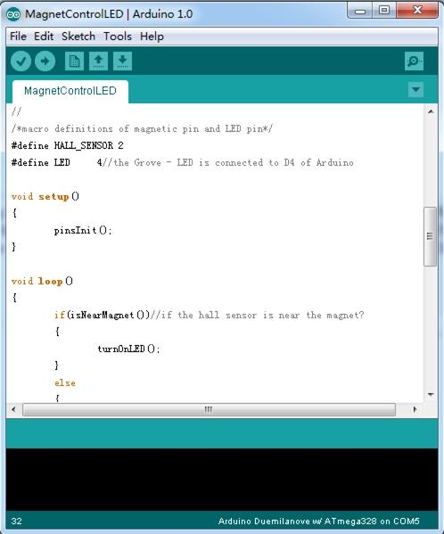

The Hall sensor is based on Hall Effect, which is the production of a voltage difference across an electrical conductor, transverse to an electric current in the conductor and a magnetic field perpendicular to the current. There is a continuous-time switch on this Grove. The output of these devices switches low (turns on) when a magnetic field (south polarity) perpendicular to the Hall sensor exceeds the operate point threshold BOP, and it switches high (turn off) when the magnetic field disappears. The twig can be used to measure RPM.

| Item | Min | Typical | Max | Unit |
|---|---|---|---|---|
| Supply Voltage | 3.8 | 5.0 | 24 | V |
| Supply Current | 4.1 | - | 24 | mA |
| Operating Temperature | -40 | - | 85 | ºC |
The Hall Sensor is used by utilizing the external interrupts available on the arduino/seeeduino. In this example we are using interrupt 0, found on digital pin 2. For other interrupts, see the attachInterrupt().

| Revision | Descriptions | Release |
|---|---|---|
| v0.9b | Initial public release | 3,Oct,2011 |
Copyright (c) 2008-2016 Seeed Development Limited (www.seeedstudio.com / www.seeed.cc)